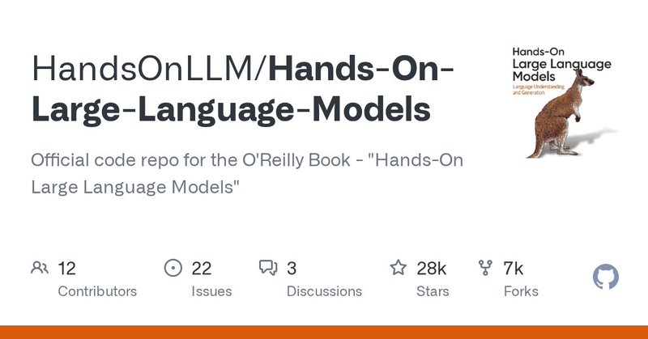

Trigger layerX 帖子称
Ren / @Ryrenz 的推荐
原帖称这本书配套代码与近三百幅插图开源，并把学习路径概括为“看图理解，跑代码验证”。
状态：原帖观点与推荐语，不等同于官方项目全部事实。
《Hands-On Large Language Models》是 Jay Alammar 与 Maarten Grootendorst 合著的 O'Reilly 书籍；官方仓库把近 300 幅定制插图与 12 章可运行 Notebook 放在一起。
官方 README 可核验：示例主要在 Google Colab 构建与测试，同时提供本地环境、Conda 和 PyTorch setup；不是“只看概念”的书，也不是只甩调用代码的速查表。
官方代码仓库 · HandsOnLLM/Hands-On-Large-Language-Models
原帖称这本书配套代码与近三百幅插图开源，并把学习路径概括为“看图理解，跑代码验证”。
状态：原帖观点与推荐语，不等同于官方项目全部事实。
GitHub 仓库描述为 O'Reilly 书籍的官方代码仓库；README 列出 12 章 Notebook、Colab 链接、setup 目录和约 300 幅定制插图。
状态：仓库元数据与 README 可直接核验。
先回答数据如何流过模型，而不是先背 API。
把基础结构连接到可观察的任务行为。
从生成模型扩展到检索和表示学习。
最后进入训练与适配，而不是一上来调参。
用章节中的图和文字建立词元、嵌入、注意力与 Transformer 的数据流直觉。
README 为每章提供 Open in Colab 链接；先改变输入，观察输出，再回头解释机制。
想做知识库就进入语义搜索/RAG，想做适配就进入嵌入训练和微调章节。

作者：Ren / @Ryrenz
互动快照：4,601 views · 113 likes · 31 reposts · 110 bookmarks
发布时间：2026-08-20 12:00:22（Asia/Shanghai）
来源：X 原帖 · 官方 GitHub · GitHub API 快照（2026-08-20）
主题：hardblue · 内容形态：单一技术项目 / 教程型项目卡